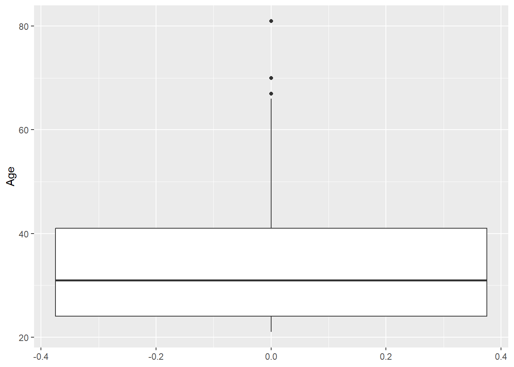
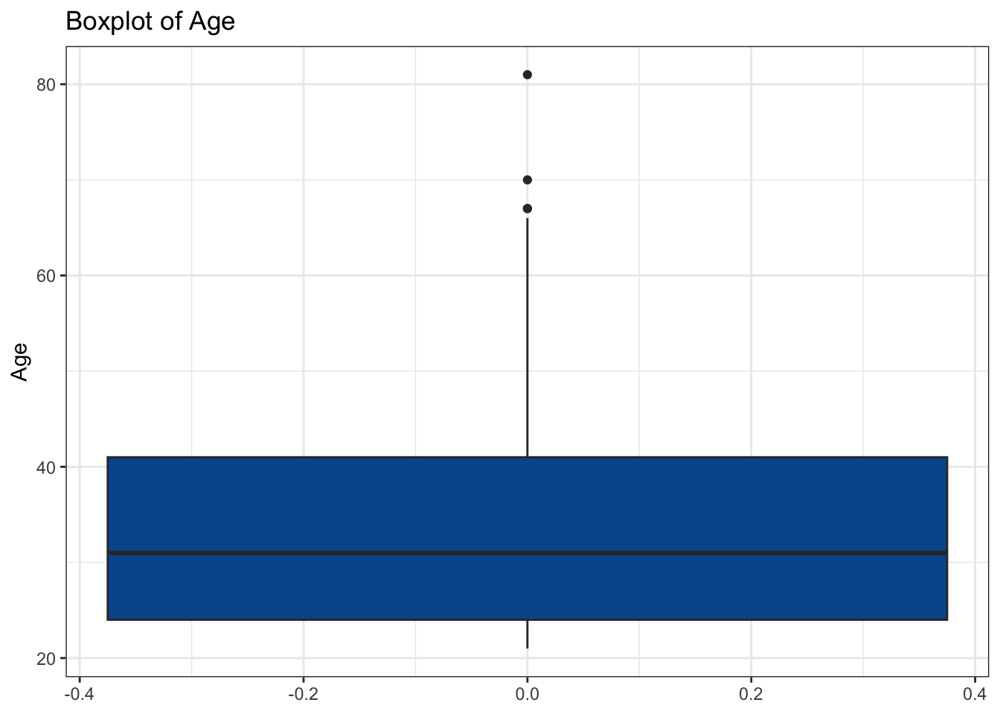
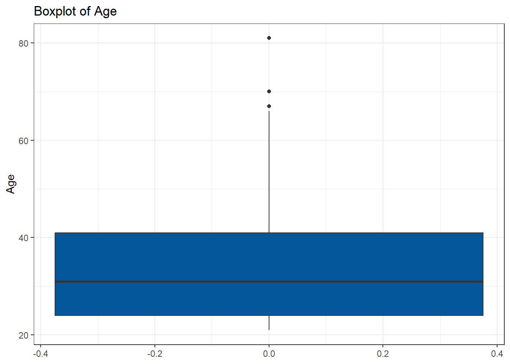
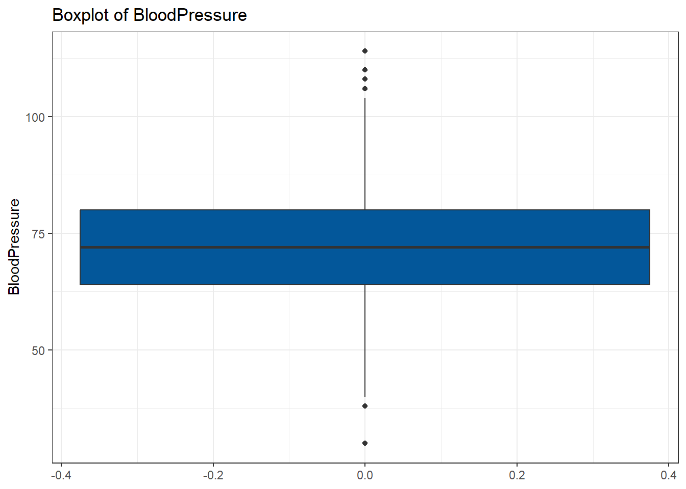
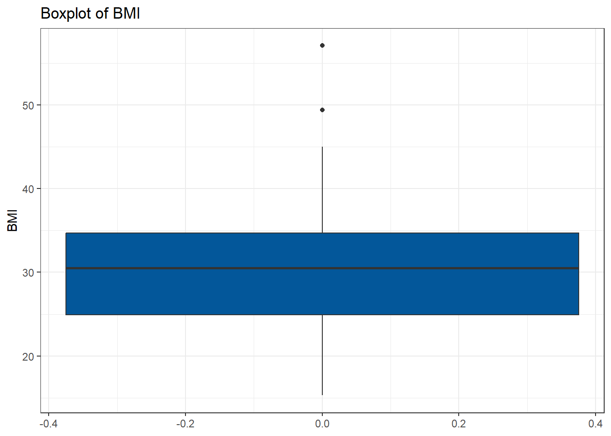
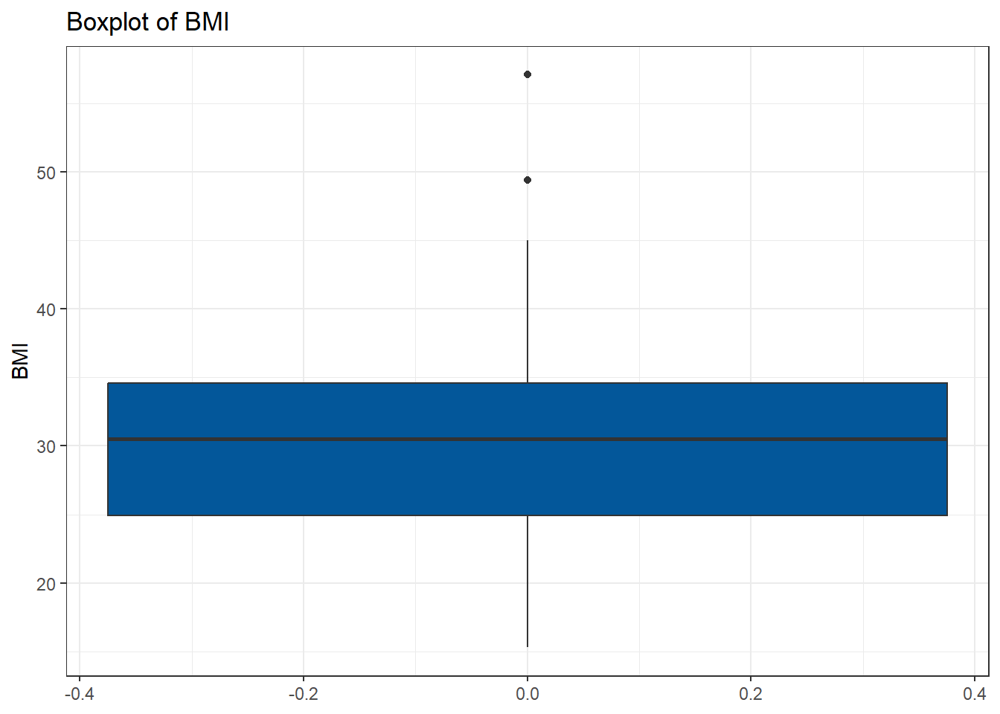
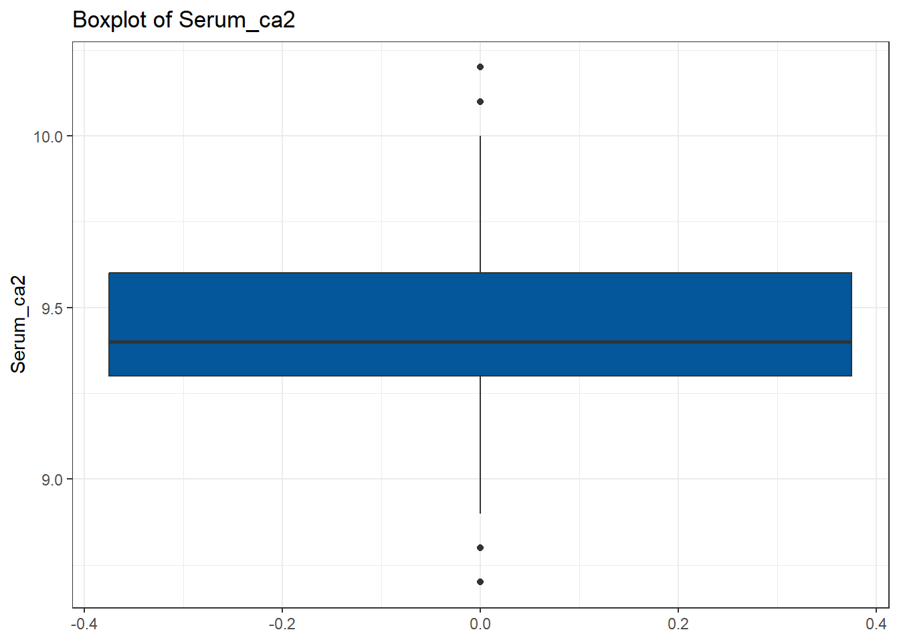
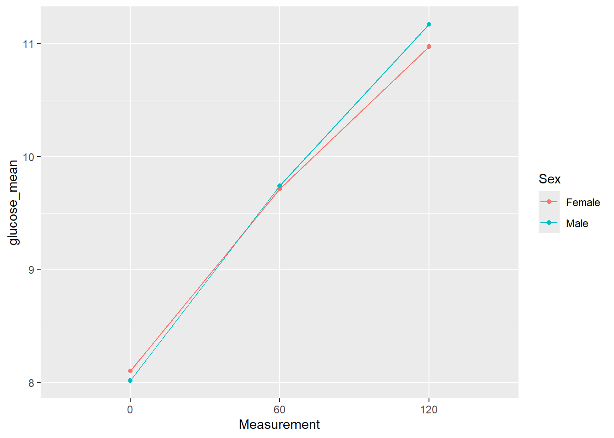
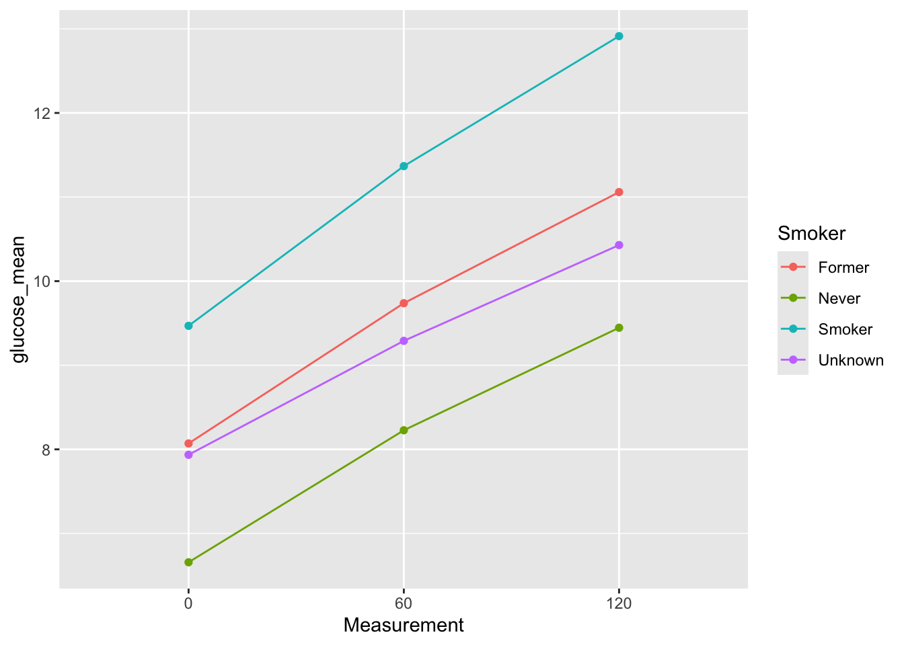

library(tidyverse)
library(glue)Exercise 4 - Solutions
In this exercise you will practice your scripting.
Getting started
Load libaries and data
diabetes_glucose <- read_rds('../out/diabetes_glucose.rds')
diabetes_glucose# A tibble: 490 × 12
ID Sex Age BloodPressure BMI PhysicalActivity Smoker Diabetes
<fct> <chr> <dbl> <dbl> <dbl> <dbl> <chr> <chr>
1 9046 Male 34 84 24.7 93 Unknown 0
2 51676 Male 25 74 22.5 102 Unknown 0
3 60182 Male 50 80 34.5 98 Unknown 1
4 1665 Female 27 60 26.3 82 Never 0
5 56669 Male 35 84 35 58 Smoker 1
6 53882 Female 31 78 43.3 59 Smoker 1
7 10434 Male 52 86 33.3 58 Never 1
8 27419 Female 54 78 35.2 74 Former 1
9 60491 Female 41 90 39.8 67 Smoker 1
10 12109 Female 36 82 30.8 81 Smoker 1
# ℹ 480 more rows
# ℹ 4 more variables: Serum_ca2 <dbl>, Married <chr>, Work <chr>, OGTT <list>If-else statements
In these exercises we don’t use the dataframe yet, that comes later when we have loops. For this part, just declare variables to test your statements, e.g. bp <- 120.
- Write an if-else statement that prints whether a person has high (more than 100), low (lower than 50) or normal blood pressure (between 50 and 100).
bp <- 80
if (bp > 100){
print('High blood pressure')
} else if (bp < 50) {
print('Low blood pressure')
} else {
print('Normal blood pressure')
} [1] "Normal blood pressure"- Write an if-else statement that assigns people high, moderate or low health risk based on their smoking habits (variable
smoker) and BMI:
Smoker and BMI greater than 35 -> high risk
Smoker or BMI greater than 35 -> moderate risk
otherwise low risk
And smoker should be one of “Smoker”, “Former”, “Never”, “Unknown”.
Verify that your statement works for different combinations of risk score and BMI
Smoker <- 'Smoker'
BMI <- 40
if (Smoker == 'Smoker' & BMI > 35){
print('High risk')
} else if (Smoker == 'Smoker' | BMI > 35) {
print('Moderate risk')
} else {
print('Low risk')
}[1] "High risk"Loops
- Create a vector with at least 5 elements and loop over it.
my_v <- c(1, 78, 5, 'hello', 7)
for (el in my_v) {
print(el)
}[1] "1"
[1] "78"
[1] "5"
[1] "hello"
[1] "7"- Loop over all column names of diabetes_glucose.
Hint
colnames(df) creates a vector of column names.
for (col in colnames(diabetes_glucose)) {
print(col)
}[1] "ID"
[1] "Sex"
[1] "Age"
[1] "BloodPressure"
[1] "BMI"
[1] "PhysicalActivity"
[1] "Smoker"
[1] "Diabetes"
[1] "Serum_ca2"
[1] "Married"
[1] "Work"
[1] "OGTT"- Loop over all rows of diabetes_glucose and determine whether the person’s blood pressure is high, low or normal with the same conditions as in 1.
#We'll only show the first 10 rows here for brevity
#for (i in 1:nrow(diabetes_glucose)) {
for (i in 1:10) {
bp <- diabetes_glucose$BloodPressure[i]
if (bp > 100){
print('High blood pressure')
} else if (bp < 50) {
print('Low blood pressure')
} else {
print('Normal blood pressure')
}
}[1] "Normal blood pressure"
[1] "Normal blood pressure"
[1] "Normal blood pressure"
[1] "Normal blood pressure"
[1] "Normal blood pressure"
[1] "Normal blood pressure"
[1] "Normal blood pressure"
[1] "Normal blood pressure"
[1] "Normal blood pressure"
[1] "Normal blood pressure"- Loop over all rows of diabetes_glucose and determine the risk based on genetic risk score and BMI, with the same conditions as in 2. Print the genetic risk score and BMI as well as the risk level to make it easier to see whether your code works correctly.
Hint
An easy way to printing several variables is to pass a vector into print: print(c(this,and_that,and_this_too))
#We'll only show the first 10 rows here for brevity
#for (i in 1:nrow(diabetes_glucose)) {
for (i in 1:10) {
Smoker <- diabetes_glucose$Smoker[i]
BMI <- diabetes_glucose$BMI[i]
#skip rows where either of the values is NA
if (is.na(Smoker) | is.na(BMI)){
next
}
if (Smoker == 'Smoker' & BMI > 35){
print(c(Smoker, BMI, 'High risk'))
} else if (Smoker == 'Smoker' | BMI > 35) {
print(c(Smoker, BMI,'Moderate risk'))
} else {
print(c(Smoker, BMI,'Low risk'))
}
}[1] "Unknown" "24.7" "Low risk"
[1] "Unknown" "22.5" "Low risk"
[1] "Unknown" "34.5" "Low risk"
[1] "Never" "26.3" "Low risk"
[1] "Smoker" "35" "Moderate risk"
[1] "Smoker" "43.3" "High risk"
[1] "Never" "33.3" "Low risk"
[1] "Former" "35.2" "Moderate risk"
[1] "Smoker" "39.8" "High risk"
[1] "Smoker" "30.8" "Moderate risk"User defined Functions
In this part we will write some functions that create plots.
Since we want to be able to pass the name of the column to plot as a variable we will need to use the syntax for aliased column names. We showed how to do that in the end of presentation 3 if you need a refresher.
- Create a variable
plot_columnand assign “Age” to it. Now make a boxplot of that column. Switchplot_columnto a different column indiabetes_glucose. Does it work?
#the column we want to plot
plot_column <- 'Age'
#make the plot
ggplot(diabetes_glucose, aes(y = .data[[plot_column]])) +
geom_boxplot()Warning: Removed 2 rows containing non-finite outside the scale range
(`stat_boxplot()`).
- Wrap your code for the boxplot into a function. The function should take two arguments: the dataframe to use and the name of the column to plot. Test your function. Add some customization to the plot like a theme or colors.
Hint
Functions are good at returning objects so make your plot into an object and return that.
make_boxplot <- function(df, plot_column){
p <- ggplot(df, aes(y = .data[[plot_column]])) +
geom_boxplot(fill = "#03579A") +
labs(title = paste("Boxplot of", plot_column)) +
theme_bw()
return(p)
}
make_boxplot(diabetes_glucose, 'Age')Warning: Removed 2 rows containing non-finite outside the scale range
(`stat_boxplot()`).
- Add a check to your function whether the supplied column is numeric. Note here that you need to test the data type of the column you want to plot, not the data type of it’s name. Confirm that your check works.
make_boxplot <- function(df, plot_column){
if (!is.numeric(df[[plot_column]])){
stop('The column to plot must be numcerial.')
}
p <- ggplot(df, aes(y = .data[[plot_column]])) +
geom_boxplot(fill = "#03579A") +
labs(title = paste("Boxplot of", plot_column)) +
theme_bw()
return(p)
}
make_boxplot(diabetes_glucose, 'Sex')Error in make_boxplot(diabetes_glucose, "Sex"): The column to plot must be numcerial.- Write code to apply your boxplot function to each numerical column in the dataframe. There are different ways to achieve this.
# Our Idea: Find names of all numeric columns and plug them into a for loop
num_cols <- diabetes_glucose %>%
select(where(is.numeric)) %>%
colnames()
#check if correct columns found
num_cols[1] "Age" "BloodPressure" "BMI" "PhysicalActivity"
[5] "Serum_ca2" #iterate over numeric columns and display plots
for(col in num_cols){
my_plot <- make_boxplot(diabetes_glucose, col)
print(my_plot)
#alternative: if you want to extport the plots to files use something like:
#ggsave(paste0('../figures/boxplot_diabetes_',col,'.png'), width = 7, height = 5)
}Warning: Removed 2 rows containing non-finite outside the scale range
(`stat_boxplot()`).




- Create an R script file to contain your functions. Copy your functions there and remove them from your global environment with
rm(list="name_of_your_function"). Now source the function R script in your quarto document and test that the functions work.
#remove function from global environment so we can test if it loads properly from the script
rm(list = "make_boxplot")source('solution4_functions.R')make_boxplot(diabetes_glucose, 'Age')Warning: Removed 2 rows containing non-finite outside the scale range
(`stat_boxplot()`).Extra exercises
First, unnest diabetes_glucose so you get back the Measurement and Glucose columns.
diabetes_glucose_unnest <- diabetes_glucose %>%
unnest(OGTT)e1. Calculate the mean Glucose (mmol/L) for each measuring time point (i.e. one value for 0, 60 and 120). Now stratify this mean by a second variable, Sex. You should have 6 mean values since there are 6 groups (0_female, 0_male, 60_female, ect). Now, create a variable category to which you pass the name of the column to stratify by (e.g. category <- 'Sex') and use category in your code instead of the literal variable name.
category <- 'Sex'
glucose_group_mean <- diabetes_glucose_unnest %>%
group_by(Measurement, .data[[category]]) %>%
summarize(glucose_mean = mean(`Glucose (mmol/L)`), .groups = "drop")
glucose_group_mean# A tibble: 6 × 3
Measurement Sex glucose_mean
<fct> <chr> <dbl>
1 0 Female 8.10
2 0 Male 8.02
3 60 Female 9.71
4 60 Male 9.74
5 120 Female 11.0
6 120 Male 11.2 e2. We would like to make a plot that shows the means you calculated above. Again, use your category variable instead of the literal column name.
glucose_group_mean %>%
ggplot(aes(x = Measurement,
y = glucose_mean,
color = .data[[category]],
group = .data[[category]])) +
geom_point() +
geom_line()
e3. Wrap the code from e1 and e2 into a function show_mean_by_catergory so that you can call: show_mean_by_catergory(diabetes_glucose_unnest, 'Sex') and it will make you the plot. Test with different columns.
show_mean_by_catergory <- function(df,category){
glucose_group_mean <- df %>%
group_by(Measurement, .data[[category]]) %>%
summarize(glucose_mean = mean(`Glucose (mmol/L)`), .groups = "drop")
p <-glucose_group_mean %>%
ggplot(aes(x = Measurement,
y = glucose_mean,
color = .data[[category]],
group = .data[[category]])) +
geom_point() +
geom_line()
return(p)
}show_mean_by_catergory(diabetes_glucose_unnest, 'Smoker')